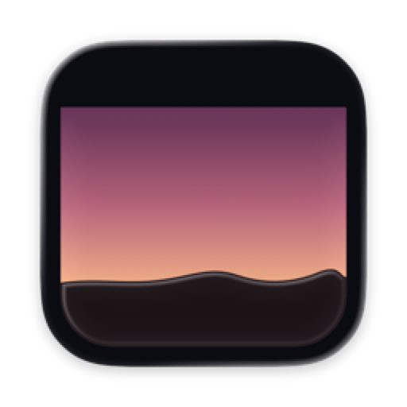

Readable at a glance
White icons on solid black. No more hunting for the clock on a bright photo, or icons that flip between dark and light as your wallpaper changes.

NightbarNightbar gives your Mac a solid black menu bar with crisp white icons. It stays that way on bright photos, busy art and live wallpapers, on every screen you plug in.
Version 1.0 · No account · No tracking
White icons on solid black. No more hunting for the clock on a bright photo, or icons that flip between dark and light as your wallpaper changes.
On a MacBook with a notch, a black bar makes the cut-out vanish into the menu bar. The top of your screen looks like one clean edge.
Nightbar never edits, crops or replaces your wallpaper. Turn it off from its menu and everything is exactly as it was.
How it works
Apps cannot paint the menu bar. macOS picks its look, and whether icons are dark or white, from whatever sits behind it. So Nightbar places a black strip right behind the menu bar, one layer above the wallpaper and below your windows and desktop icons.
macOS sees black, draws a black menu bar and switches the icons to white. That is the whole trick, which is why it works with every wallpaper, including live ones.
Install
Get Nightbar.zip and open it. Move Nightbar into your Applications folder.
Nightbar is not notarized by Apple yet, so macOS asks first. If it refuses, go to System Settings › Privacy & Security and click Open Anyway.
Click the Nightbar icon in the menu bar and turn on Launch at Login. Done.